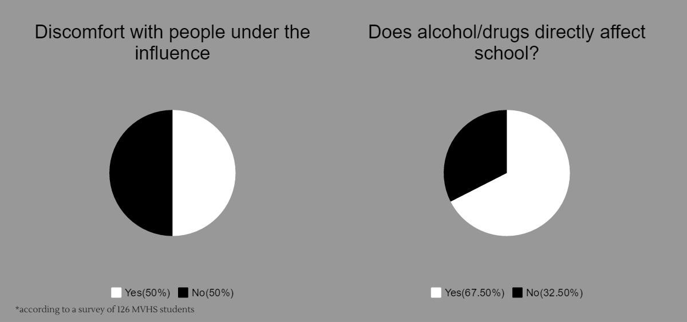

Introduction
A small suburb that many of us consider safe is defined by the titles of high-tech companies nearby. This town that almost 60,000 of us call home is so secure and understated that it’s referred to as the little bubble of Cupertino. But even in the tranquil community of Cupertino, crime is still prevalent. Whether it be thefts in the locker rooms of MVHS, shoplifting or home burglaries, some students indulge in the adrenaline rush of crime.
In this interactive package, El Estoque explores crime and illegal activity in Cupertino, from robberies in our neighborhoods to a place that students wander through every day — MVHS. From thefts to illegal substance abuse and how MVHS’ administration combats these problems, this is a look at crime within the bubble of Cupertino.
Fear of crime brings community together
by Avni Prasad, Andrea Schlitt, and Tyler Lin
The people of Cupertino often refer to their city as an isolated community or a bubble because of its low crime rate, high concentration of Asian-Americans and scholarly background. However, Cupertino isn’t as pure and safe as most believe it to be. Crime in Cupertino is a highly overlooked topic, as most assume Asians aren’t associated with criminal activity. In reality, most crime that occurs within the city are caused by outsiders who pass by. The map below shows criminal incidents that have occurred in the Cupertino area in the past week. Click on the map to read more on crime in our city.

The silhouttes of shoplifters
by Ilena Peng with additional reporting from Albert Wang
Although we may only hear about locker room crooks on campus, others have ventured from the locker rooms to stores, dabbling in the realm of shoplifting along with 27 million other individuals in our nation.* Three anonymous seniors share their reasons behind stealing, the day they got caught and why they decided to, at the end, simply own up to their actions. These are the stories of those who reveled in the adrenaline rush of that dangerous edge, those who loved the feeling of being able to have anything they wanted and forgot the consequences that were drowned by a sense of invincibility.
Note: the voices of these individuals have been altered to maintain their privacy
After getting caught and having to pay a civil settlement, this senior decided it was probably the best idea not to steal, yet the adrenaline of stealing is something he still misses.
“I thought I’d got away scot free.” This senior, who considers himself blessed to have not gotten into more serious trouble. Following what he describes as a traumatizing experience, it’s his belief that nothing is worth stealing for.
An unpaid snack after studying for the SATs turns to a long ordeal for this senior when a security guard nabs him, yet he’s glad it happened earlier, rather than when he’d become a legal adult.
*Information and statistics provided by the National Association for Shoplifting Prevention (NASP) a nonprofit organization that shapes, promotes and supports comprehensive community action in shoplifting prevention efforts…because shoplifting steals from all of us. Contact NASP at 800-848- 9595 or visit www.shopliftingprevention.org.
Illegal substance abuse on and off campus
by Brighton Balfrey
As Newsweek’s 18th best public high school in the nation, where academia is largely reputed to be the priority, it might be surprising to find people that do drugs. Almost three out of every 10 respondents to a survey of 126 students said they had tried marijuana at least once, while even more had tried alcohol. Furthermore, almost two out of every 10 said they had used the drugs to self-medicate and help them cope with the stresses of being a high school student.

Amid loud music and excited friends at the Welcome Back Dance this year, the fun was dampened when administration was left with no choice but to take various levels of disciplinary action against students for different reasons, including the usage of drugs and alcohol.
Sophomore Alejandro Toruno attended the Welcome Back Dance this year, and says he saw many of his friends and peers under the influence of alcohol or marijuana.
“I guess people like the feeling of seeing everything blurry and feeling alive in the moment,” Toruno said. “They go for it because a lot of their friends are into it.”
While it flew under the radar of over half of the students who responded to the survey, Toruno seemed to think that many students would lie about their knowledge to protect their friends’ or their own reputation. At a school known for its competitive nature, most want to avoid the reputation of being a stoner or a drinker.
An anonymous source, whose identity has been hidden due to his fear of disciplinary risk by the administration, said that he has came to school under the influence of alcohol on multiple occasions. He consumed it in the student parking lot where there is less supervision, typically before and after school dances or events.
Although there are usually members of the administration and occasionally even police officers in the parking lot throughout school events and during the day, this student was not concerned about getting caught. He repeatedly echoed that he thought his actions did not affect the school or other students in any way.
The source smokes about once a week, and sometimes even more. He says that peer pressure was the driving factor behind trying marijuana for the first time, but his use has increased since he started and he declined to comment on whether or not he has come to class under the influence of marijuana. He did, however, say that he had never used marijuana on campus like he did with alcohol. Instead, he chooses to do that elsewhere to avoid anybody noticing the odor from the smoke.
Student Advocate Richard Prinz cites peer pressure as one of the leading forces behind students trying both drugs and alcohol.

“I think sometimes you do get sucked into wanting to be social and be with your friends,” Prinz said.
Junior Cheri Zhou has seen it within her own friend group. She said that when she was a freshman, she would have never guessed that students would get involved with drugs and alcohol because of the generally rigorous environment at MVHS. Her own friends, however, have started drinking because they think it makes them cooler and because others around them drink. While this takes a toll on the health of those who are doing it, it also takes a toll on their friendship.
“The closer they are to me, the more uncomfortable it gets,” Zhou said. “It can affect me as a person more.”
For some students, like Zhou, use of drugs and alcohol can directly challenge their morals, and even their faith. Some major religions, including Islam, ban the use of alcohol, and other religions discourage its use.
Many students on campus share similar sentiments with Zhou. Of the students surveyed, 50 percent said that others under the influence make them uncomfortable, while 67.5 percent think that it directly affects performance in school. Respondents to the survey in the optional comments section frequently gave contradictory responses; some said that responsible drug use doesn’t have to affect a student’s academic performance, and some even added that the administration should focus more on different issues, but others said that it lowers the intelligence of the student.
Although alcohol and marijuana use at dances and school events according to the survey and student interviews, there are also more serious cases of abuse. Although unable to give specific details due to student confidentiality, Prinz says that he has seen serious cases of abuse where students have had parole officers and have had to get drug tested.
“Some [use of drugs/alcohol] is self medicating, you’re stressed out, you’re feeling lonely, you’re feeling scared, drink some alcohol, smoke some pot, and then you don’t have to think about it,” Prinz said. “It delays your development. You’re not confronting the issue.”
Prinz also emphasized that drug and alcohol abuse cannot be generalized. Each student has different motivations, and thus punishments also should be evaluated carefully. Monta Vista’s Zero Tolerance policy mandates either suspension or expulsion for students found using or selling drugs or alcohol on campus, but according to Prinz this is not always the most effective solution.
“It could be showing up to a dance with alcohol on your breath and the assistant principal calls your parents, and you’re suspended for a day,” Prinz said. “If you’re suspended, and you're parents work, you have more opportunity to drink.”
Prinz says that the district has different programs, such as counseling, in place for students who need help battling their drug and alcohol abuse, but the first step is self motivation by the student himself.
If students believe they have a drug problem, it is in their interest to reach out to Prinz for help. He is not allowed to share any information he hears with the administration or parents, unless a student is a risk to themself or those around them. It is his job to help MVHS students with problems like these.
“Some people have to run into a lot of trouble before they realize it’s not worth the trouble,” said Prinz.
Students share their experiences with locker room theft
by Gauri Kaushik
Students in PE leave their backpacks, wallets, laptops and other valuables in the locker rooms, and they don’t always lock them. Because of this, many students have had their possessions stolen during PE. Hover over the image below to read reflections from students who have had things stolen from them.
Admin Perpsective - Crime on Campus
by Claire Chang
Crime can happen anywhere, even at MVHS and it’s important to understand how the administration deals with crime and how students can take steps to prevent it both on and off of campus. Click on the image below to read about just how big of a role the administration plays in dealing with crime and theft at Monta Vista.

Back to News